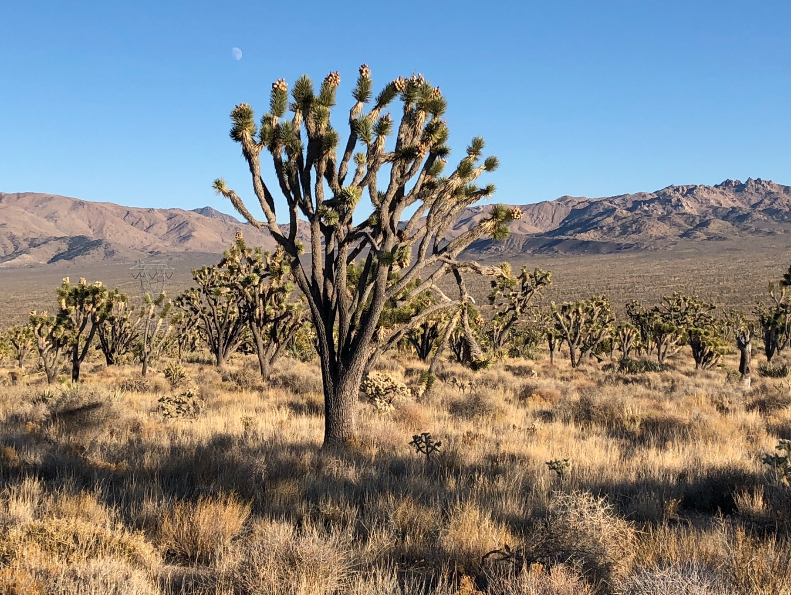
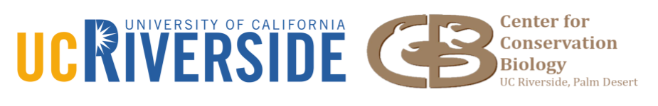

Welcome to the CCB Research Unit Resource Guide
The Center for Conservation Biology (the Center, or CCB) is a University of California Riverside (UCR) organized research unit. Our mission is to assist in the conservation and restoration of species and ecosystems by facilitating the collection, evaluation, and dissemination of scientific information.

East of Cima Dome in the Mojave National Preserve, California.
Image Credit: Center for Conservation Biology
